CODE A LITTLE. GROW TOGETHER.
I build things.
Kouzi supervises.
你好，我是 William。写点代码，也养一只叫扣子的小猫。

扣子在等你回家。小猫不会因为你休息而离开。
扣子 Kouzi
正在读取成长记录爱好：踩键盘、睡午觉，以及看你终于修好那个 bug。
下一次小小的冒险— / 60 XP
经验来自 GitHub 的每日贡献。
今天的进度，从一声喵开始。
在这里陪扣子玩，不会增加真实经验。成长跟着你的代码活动慢慢来。
扣子最近在研究什么
A FEW SIDE QUESTS从公开仓库自动挑选，每天更新。新项目有内容后，扣子就会去探险。
一起长大
A SMALL LIFE, WELL LIVED每个写代码的日子，都留下一点小小的足迹。
☾ 休息日 🐾 有贡献的一天 · 以 GitHub 贡献日历为准
- 初来乍到Lv. 1
- 键盘学徒Lv. 2–3
- 代码搭子Lv. 4–5
- 仓库守护猫Lv. 6+
猫窝收藏
纸箱与小碗
扣子是怎么长大的？
从领养日开始，按 GitHub 贡献日历的每天贡献数积攒经验。提交、PR、Issue 等是否计入，由 GitHub 决定。
| 当日贡献 | 获得经验 |
|---|---|
| 0 次 | 0 XP，安心休息 |
| 1–3 次 | 5 XP |
| 4–9 次 | 8 XP |
| 10 次及以上 | 10 XP |
每级 60 XP。每天最多 10 XP，同一天重复更新不会重复加分。已获得的经验不因休息或贡献记录后续修订而扣除。
Lv. 2 解锁猫窝、毛线球与绿植；Lv. 4 解锁窗边坐垫；Lv. 6 解锁纪念画。最早 6 个满经验活跃日升一级，慢慢来就好。
日历日期按 GitHub 返回的 UTC 日期显示。数据每日同步，贡献可能延迟计入；扣子会回看最近 35 天并补记经验。
正在读取同步信息。